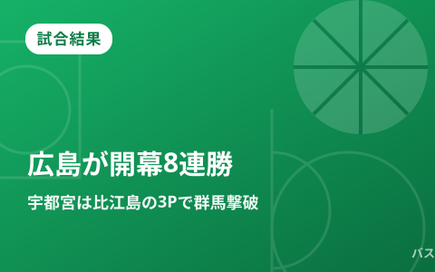

広島が山崎稜の劇的ブザービーターで開幕8連勝、宇都宮は比江島の決勝3Pで北関東ダービー制す

10月19日に行われたりそなB.LEAGUE PREMIERでは、広島ドラゴンフライズが三遠ネオフェニックスを77-75で下し、山崎稜の残り0.8秒のブザービーター3ポイントで開幕8連勝を達成しました。同日の北関東ダービーでは、宇都宮ブレックスが終盤に比江島慎の決勝3ポイントを沈め、群馬クレインサンダーズに83-80で逆転勝利。このほか東地区首位のアルバルク東京が秋田ノーザンハピネッツに90-74で勝利して8勝1敗とし、千葉ジェッツは東京サンロッカーズに64-107で大敗するなど、計9試合が行われています。また宇都宮対群馬の一戦では、宇都宮のギャビン・エドワーズがリーグ通算500試合出場という節目の記録を達成しました。10月20日はB.PREMIER・B.ONE・B.NEXTともに試合が組まれていない休養日です。
広島、三遠に77-75 山崎稜が残り0.8秒で値千金のブザービーター
広島グリーンアリーナで行われた一戦は、序盤に主導権を握った広島が第2クォーター残り1分32秒には一時15点のリードを奪う展開でした。しかし三遠ネオフェニックスが後半に猛追し、第3クォーター残り3分23秒には逆転。その後は一進一退の終盤戦となりました。共同通信の報道によると、残り9秒に広島のドウェイン・エバンスが3ポイントを沈めて1点差に迫ると、直後に三遠の佐々木隆成がフリースローを2本とも落とし、広島にチャンスが転がり込みます。残り0.8秒からのオフェンスでボールを受けたのは、逆サイドでフリーになっていた山崎稜。ブザーと同時に放った3ポイントがリングに吸い込まれ、77-75の劇的勝利で開幕からの連勝を8に伸ばしました。バスケットボールキングの取材に、山崎稜は「自信につながるし、今後も変わらず準備を続けていきたい」とコメントしています。
| チーム | 最終スコア | 通算成績 |
|---|---|---|
| 広島ドラゴンフライズ | 77 | 8勝0敗 |
| 三遠ネオフェニックス | 75 | 5勝1敗 |
宇都宮、比江島慎の決勝3Pで群馬に逆転勝利 北関東ダービー制す
下野新聞デジタルの報道によると、群馬クレインサンダーズが第1クォーターに3ポイントを立て続けに沈めて16-27とリードを広げ、前半を37-41、第3クォーター終了時も56-60と4点のリードを保つ苦しい展開でした。しかし宇都宮ブレックスは第4クォーターに反撃し、終盤に比江島慎が値千金の3ポイントシュートを決めて逆転。そのまま83-80で振り切り、北関東ダービーを制しました。この勝利で宇都宮は4勝4敗とし、群馬は6勝3敗で2連敗となっています。
| クォーター | 第1Q | 第2Q | 第3Q | 第4Q | 合計 |
|---|---|---|---|---|---|
| 宇都宮ブレックス | 16 | 21 | 19 | 27 | 83 |
| 群馬クレインサンダーズ | 27 | 14 | 19 | 20 | 80 |
宇都宮・ギャビン・エドワーズがリーグ通算500試合出場 今季限りで現役引退へ
バスケットボールキングの報道によると、この群馬戦に先発出場した宇都宮ブレックスのギャビン・エドワーズが、9得点4リバウンドを記録してB.LEAGUEリーグ通算500試合出場という節目の記録に到達しました。エドワーズは2013年に来日し、シーホース三河・千葉ジェッツを経て宇都宮に加入。2020年には日本国籍を取得して帰化選手となり、東京オリンピックにも日本代表として出場した実績を持ちます。宇都宮ブレックスは今年6月、エドワーズ本人の申し出を受けて2026-27シーズン限りでの現役引退を発表しており、今回の500試合出場は現役ラストシーズンでの大きな節目となりました。
その他の試合 A東京は秋田に90-74で8勝目、千葉Jは東京SRに大敗
東地区首位のアルバルク東京は、TOYOTA ARENA TOKYOで秋田ノーザンハピネッツと対戦し90-74で勝利。デイリースポーツによると、この勝利でA東京は8勝1敗とし、連勝を7に伸ばしています。秋田の公式発表では、第1クォーターからシュート確率の低さに苦しみ20-23とビハインドを背負うと、最後まで突き放される展開となり3勝5敗となりました。一方、LaLa arena TOKYO-BAYで行われた千葉ジェッツ対東京サンロッカーズは、第3クォーターで一気に点差を広げられた千葉Jが64-107の大差で敗れています。東京サンロッカーズは、ジョシュ・ホーキンソンが21得点6リバウンド4アシストと活躍しました。
| カード | スコア |
|---|---|
| 仙台89ERS vs 神戸ストークス | 80 - 71 |
| アルバルク東京 vs 秋田ノーザンハピネッツ | 90 - 74 |
| 千葉ジェッツ vs 東京サンロッカーズ | 64 - 107 |
| 信州ブレイブウォリアーズ vs 名古屋ダイヤモンドドルフィンズ | 77 - 92 |
| 島根スサノオマジック vs 川崎ブレイブサンダース | 80 - 69 |
| 長崎ヴェルカ vs アルティーリ千葉 | 65 - 82 |
| 琉球ゴールデンキングス vs 滋賀レイクス | 99 - 67 |
| 東京ユナイテッド vs 山形ワイヴァンズ（B.ONE） | 87 - 61 |
開幕から1カ月、無敗の広島が独走態勢
9月22日に開幕したB.PREMIERも1カ月が経過し、西地区では広島ドラゴンフライズが唯一の無敗を守って独走態勢を築いています。東地区ではA東京が8勝1敗で単独首位を堅持する一方、北関東勢は宇都宮・群馬ともに黒星を喫し合うなど、中位グループの順位争いも混戦模様です。10月20日は全リーグで試合が組まれておらず、各クラブは次節に向けて調整に入ります。最新の順位・日程は順位・日程カテゴリで随時お届けします。
Q. 広島の「開幕8連勝」はどれくらいすごい？
A. 2026-27シーズン開幕から一度も負けていない状態（8戦全勝）という意味です。10月19日時点でリーグ全体を見渡しても無敗を保っているのは広島のみで、西地区の独走態勢を築いています。
出典：共同通信「広島が開幕8連勝 バスケBプレミア」／バスケットボールキング「残り0.8秒から劇的3Pを沈めた山崎稜」／下野新聞デジタル「宇都宮ブレックス、最終盤に比江島が3点シュート」／バスケットボールキング「ギャビン・エドワーズがリーグ通算500試合出場」／Bリーグ（DAZN News）「Bプレミア結果まとめ」／秋田ノーザンハピネッツ公式「試合結果」／B.LEAGUE公式 日程・結果ページ
https://news.yahoo.co.jp/articles/789103253c18dddbfc7947873bd5377c2103ac93
https://basketballking.jp/news/japan/20261020/638589.html
https://smart.shimotsuke.co.jp/articles/-/1443537
https://basketballking.jp/news/japan/20261020/638627.html
https://news.yahoo.co.jp/articles/fdae30d262805ccf2cf4dd3089bedd06b8edef10
https://northern-happinets.com/news/detail/id=22968
https://www.bleague.jp/schedule/?tab=1&year=2026&mon=10&day=19